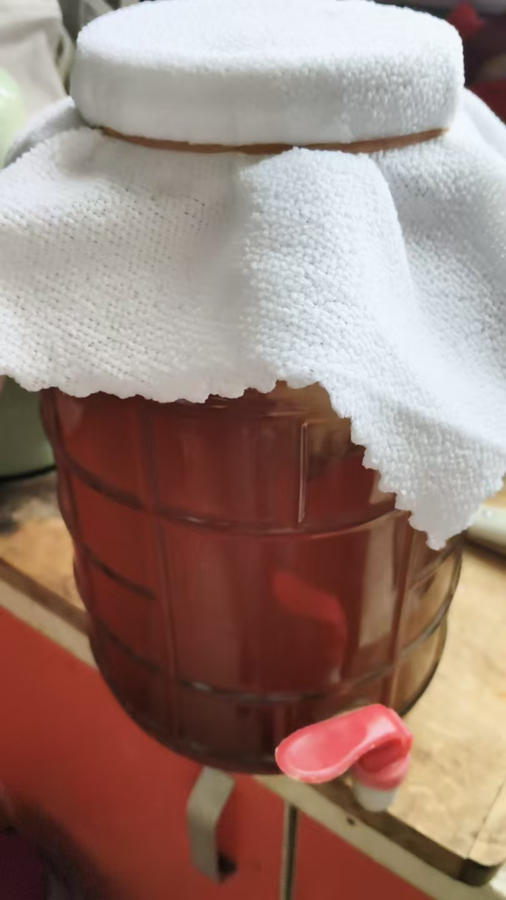
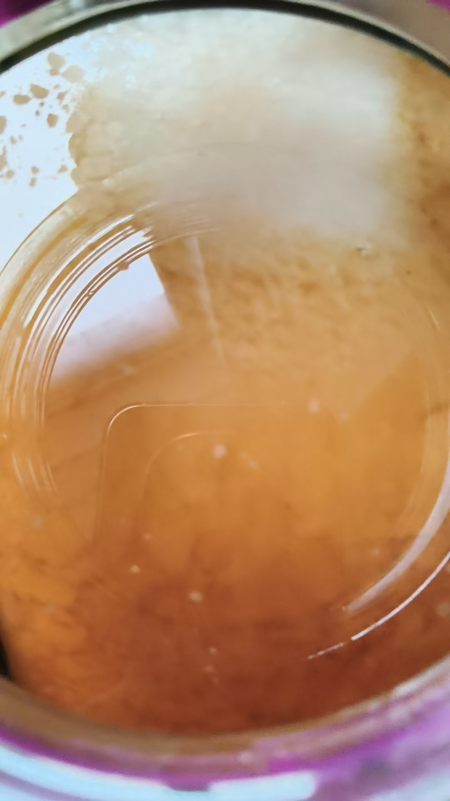
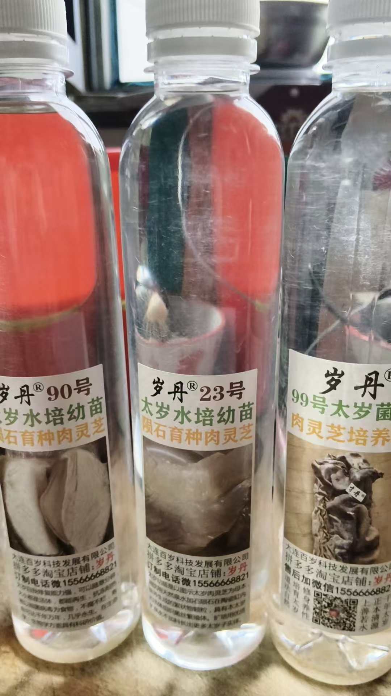
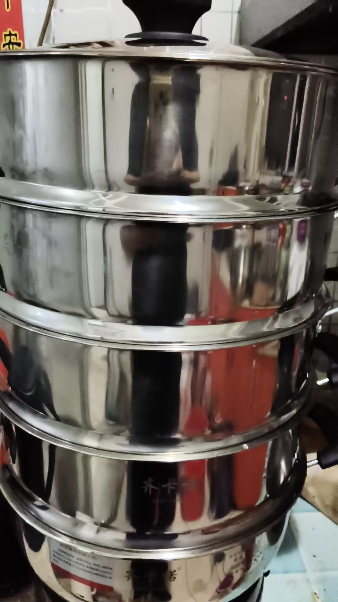
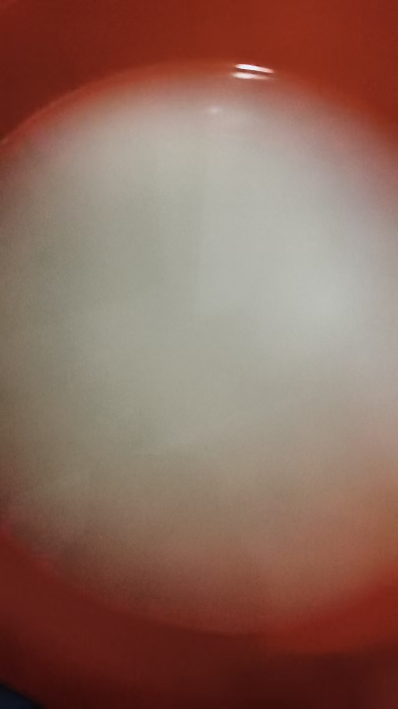
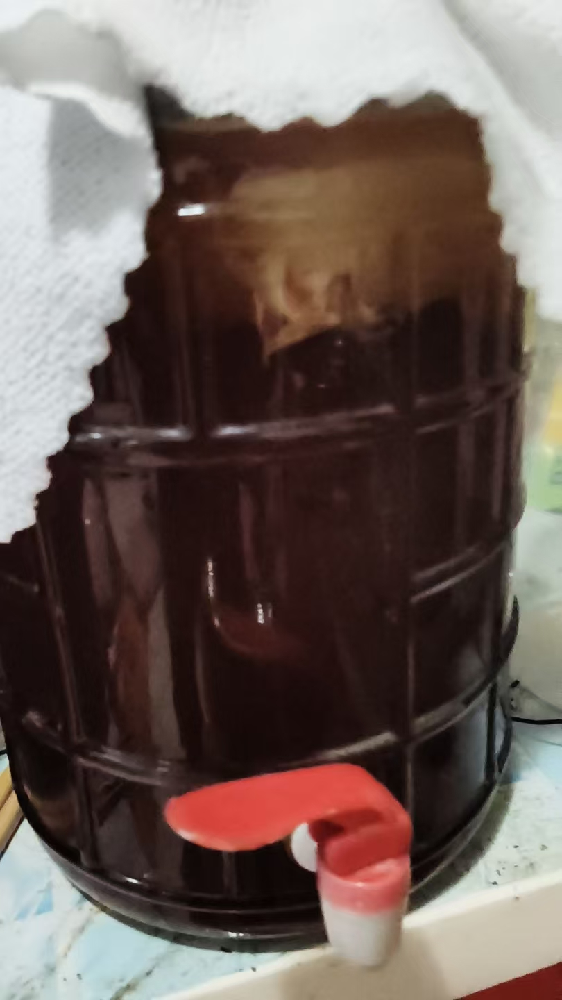

20260928养红茶菌 养太岁
符咒术法风水布局 原始对话记录那时代，厨师是被挑剔的人
所以，养成这习惯
从来不挑
淡了，原汁原味
咸了，有滋有味
多少经历，有棱有角，也磨圆了
受教了[偷笑][偷笑][偷笑]
又一教学证据
四正四隅上下十方位护法
淡了原汁原味！咸了有滋有味！[强][强][强]师父高明
受教！[抱拳][抱拳][抱拳]
酒成
再发两天
米糖化的还不够
我这个也是米酒
嗯嗯
这杯有三年的米酒
[呲牙][呲牙]
我也打算有时间就做点，喝陈酒
剩下的米渣放冰箱里，过几天做一次白酒就用了
一点都不能浪费
[憨笑][憨笑]
红茶菌养了三桶


喝了这几天，感觉不错
喝着这个，醋就不做了

太岁买了三份
送九份苗
原来太岁分几十个品种
养了这几天，感觉长大了
一粒就是一个太岁，这得多少个啊
陨石育种
长得很慢
买上了，才发现，活不过它
能活一两千年
太岁好干嘛？
太岁泡水喝
喝的人几乎都高寿
@紫鸢真人 师父这个哪个好！我也买点
在哪买的
[呲牙][呲牙]只能私发
我买的这家很卫生，
买错了一家，就是给了一个塑料包，一块猪油一样的，看着很脏

米酒灭活
[憨笑][憨笑]

继续泡米，继续做
占不了多少时间

红茶菌平和，
不刺激胃
养红茶菌与养太岁：一则生活记录
一、本页是什么
本页是一段生活记录（配了几张图），主线是"养东西"：红茶菌、米酒、太岁。文字很生活化，夹着师徒之间关于口感、渠道、经验的对话。开篇还有一段"厨师心态"的自述——因为当过厨师总被挑剔，所以养成"从来不挑"的习惯，"淡了原汁原味，咸了有滋有味"。
二、红茶菌：养了三桶
记录者说自己"红茶菌养了三桶""喝了这几天感觉不错"，甚至"喝着这个，醋就不做了"。关于红茶菌，前一页记录里也提到其做法：煮红茶加黄糖水、冷透后倒入菌膜养着，每天喝并续茶水；并称其"平和、不刺激胃"。这些属传统发酵饮品的经验之谈。
三、米酒：一桌陈酒的讲究
文中多处讲做米酒："酒成，再发两天""米糖化得还不够"；有人晒出"三年的米酒"，还说"剩下米渣放冰箱，过几天做一次白酒""一点都不能浪费"。有人感叹"多少经历，有棱有角，也磨圆了"。这些是家常酿造的经验交流。
四、"养太岁"的记录
本页的重点之一是"养太岁"：记录者说"太岁买了三份，送九份苗""原来太岁分几十个品种""养了这几天，感觉长大了"；并称"一粒就是一个太岁""陨石育种""长得很慢""能活一两千年"。关于用途，只一句——"太岁泡水喝，喝的人几乎都高寿"（属民间说法）。群里有人问"哪个好、在哪买"，答复是"只能私发"；他还提醒"买错了一家，给的是塑料包、一块猪油一样的，看着很脏"，暗示市场上有假货。
| 品类 | 本页的说法 |
|---|---|
| 红茶菌 | 养三桶，口感平和 |
| 米酒 | 发酵、陈放、米渣再利用 |
| 太岁 | 分品种、长很慢、泡水 |
五、常见问题
问："喝太岁水高寿"可信吗？ 属民间说法，未经证实。健康长寿与饮食、作息、医疗等多因素相关，不能归因于单一饮品。
问：红茶菌、太岁是保健食品吗？ 它们多被视为传统发酵物／民间养生物，其"功效"说法不应替代医疗。身体不适请就医。
问：想学着养，要注意什么？ 发酵类饮品需注意卫生与容器清洁，避免杂菌污染；有基础疾病或肠胃敏感者，饮用前宜咨询专业人士。
六、提醒
- 本页为生活记录，"高寿"等属民间说法；
- 自制发酵饮品注意卫生，饮用谨慎；
- 购买"太岁"等谨防假冒与炒作。